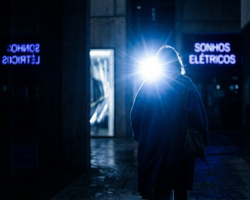
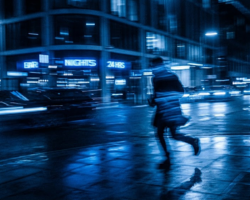
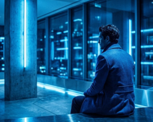
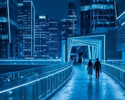
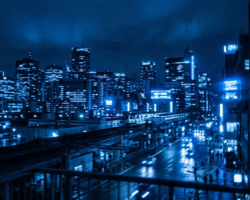
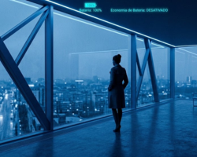
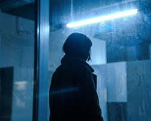

Após nos conectarmos com o público...
A JOVI entra no mercado brasileiro com foco em oferecer uma experiência relevante e adaptada ao consumidor local. Dentro desse contexto, surge o desafio de desenvolver uma solução de software capaz de aprimorar a experiência da câmera, tornando seu uso mais intuitivo e eficiente.
12 de 26
Utilizam a câmera diversas vezes ao dia
42%
Consideram a interface de suas câmeras de média dificuldade
7%
Dizem saber usar a câmera perfeitamente
Como podemos transformar a experiência da câmera?
Transformamos a experiência de fotografar com uma solução inteligente baseada em IA. Nosso software integrado à câmera utiliza o Gemini para atuar como um assistente em tempo real, corrigindo automaticamente problemas como imagens borradas, baixa iluminação e dificuldades em capturar movimentos. Com recursos de estabilização inteligente, ajuste automático de luz e foco, e captura no momento ideal, eliminamos a necessidade de intervenções manuais. O resultado é uma câmera mais eficiente, que otimiza cada clique e garante imagens de alta qualidade em qualquer situação.
Principais Mudanças
Foco
O foco da câmera é mais rápido e eficiente
Zoom
Zoom com alta qualidade
IA
Assistente virtual que guia o usuário
A solução com Inteligência Artificial
Imagens borradas e foco inconsistente
Utiliza inteligência artificial para estabilizar a câmera, melhorar o foco em objetos em movimento e capturar automaticamente o melhor momento da foto, reduzindo borrões e aumentando a qualidade das imagens.
Baixa luminosidade

Melhora fotos em ambientes escuros utilizando inteligência artificial para reduzir ruídos, ajustar automaticamente a exposição e otimizar a iluminação da imagem, garantindo fotos mais claras e equilibradas sem depender excessivamente do flash.
Movimento rápido

Usa inteligência artificial para ajustar automaticamente a câmera em cenas de movimento, realizar capturas em sequência e acompanhar objetos em tempo real, aumentando a nitidez e a qualidade das fotos de ação.
Fotos artificiais

Busca deixar as fotos mais naturais utilizando inteligência artificial para reduzir exageros no processamento, melhorar a precisão no modo retrato e equilibrar automaticamente o HDR, garantindo imagens mais realistas e visualmente agradáveis.
Ergonomia e manuseio

A ergonomia da câmera pode ser aprimorada com uma interface otimizada para uso com uma mão, comandos por voz ou gestos e atalhos personalizáveis, tornando a navegação mais simples, rápida e confortável para o usuário.
Zoom e limitações ópticas

O zoom e as limitações ópticas podem ser melhorados com inteligência artificial para aumentar a qualidade do zoom digital, corrigir distorções automaticamente e reconstruir detalhes da imagem, proporcionando fotos mais nítidas e equilibradas.
Bateria e armazenamento

O gerenciamento de bateria e armazenamento pode ser otimizado com compressão inteligente de imagens, redução do consumo de energia da câmera e organização automática das fotos, removendo duplicadas e facilitando o armazenamento do usuário.
Lente suja ou danificada

A qualidade das fotos pode ser preservada com inteligência artificial capaz de detectar sujeira, reflexos ou danos na lente antes da captura, além de sugerir automaticamente a limpeza para evitar imagens comprometidas.